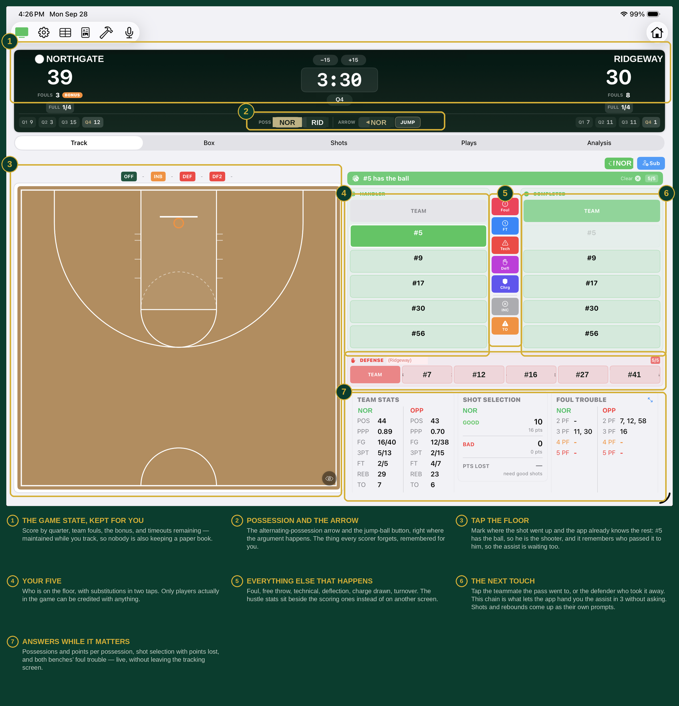

Every shot, fully described, in three taps
Tap where the shot went up and the app asks only what it still needs: who shot it, what happened, and who set it up. The pass chain is already tracked, so the most likely assister is waiting pre-selected when the shot falls.
- Shot type — jump shot, layup, floater, dunk, hook
- Half court or fast break, tagged on every attempt
- Made, missed, blocked, or and-one
- Assist credited automatically when the passer is known

▣Add screenshot
assets/feature-shot-entry.png